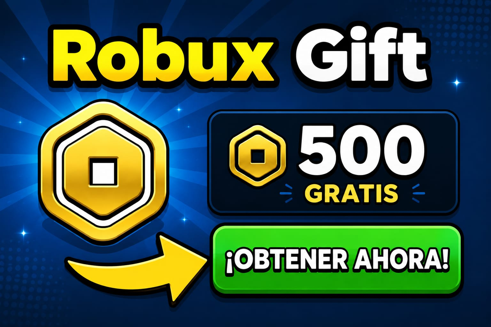

Tarjetas, Gift Cards y Robux
Las tarjetas de regalo de Roblox se han vuelto una de las formas más populares para conseguir Robux de manera segura y oficial. Muchos jugadores las utilizan para comprar accesorios, gamepasses y artículos exclusivos dentro de la plataforma.
¿Cómo funcionan las Gift Cards?
Las gift cards contienen un código especial que puedes canjear dentro de la página oficial de Roblox. Dependiendo del valor de la tarjeta, recibirás cierta cantidad de Robux o saldo para tu cuenta.
Evita páginas falsas
Muchas páginas prometen tarjetas gratis o Robux ilimitados, pero la mayoría son engaños. Nunca ingreses tu contraseña en sitios desconocidos y verifica siempre que estés en páginas oficiales.
Consejos importantes
Usa métodos oficiales, activa la verificación en dos pasos y nunca compartas códigos de regalo con personas desconocidas. Mantener tu cuenta segura es lo más importante.